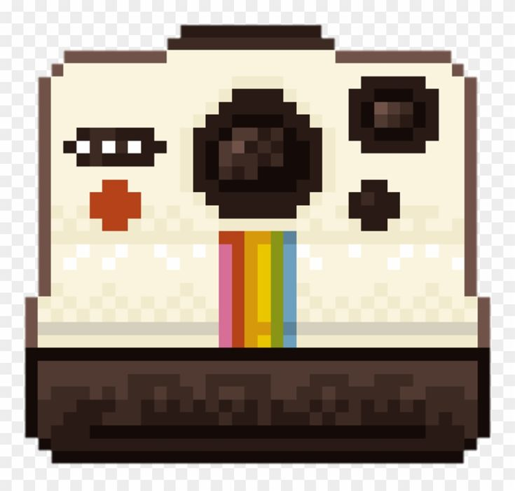
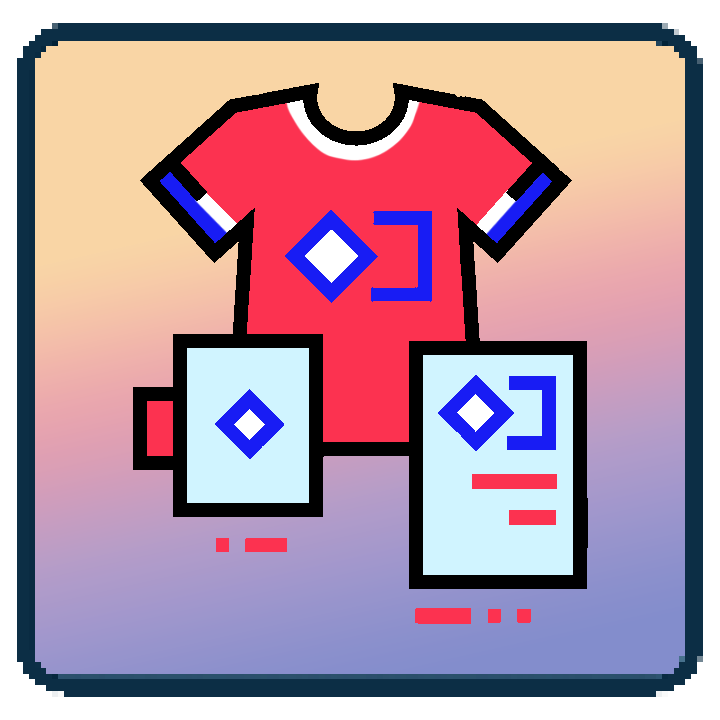
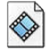
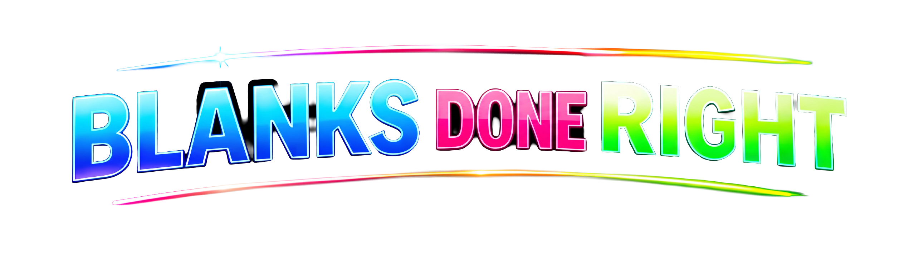
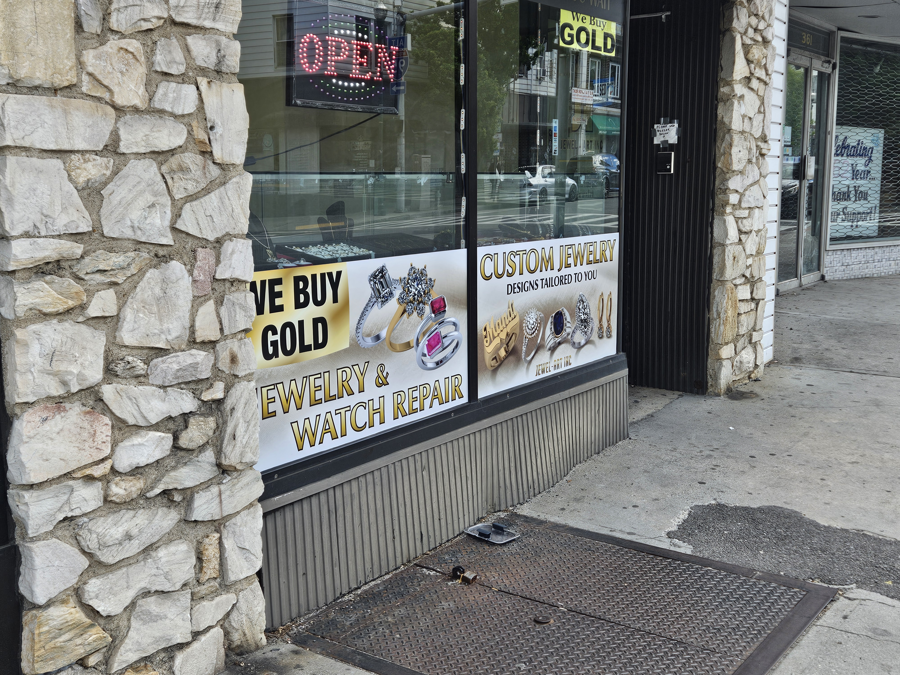

 Internet Explorer
My Files
Media Player
Internet Explorer
My Files
Media Player
 readme.txt
readme.txt
 Projects
Snake
Snake
Projects
Snake
Snake
FIRST PUBLIC RELEASE!
Thank you for standing by...
Windows Media Player
 My Projects
C:\Users\Conor\My Projects
My Projects
C:\Users\Conor\My Projects
- 📁 Make a new folder
- 📤 Publish this folder
- 📧 Share this folder
- 🖥 My Computer
- 📄 My Documents
- 🌐 My Network Places
File Folder
3 items


The Work is Real.
Most designers stop at the screen. I don't.
[Replace with your own words — something like: I'm a graphic designer and production specialist with a hands-on approach that goes beyond the file. From concept to client-ready, I handle the full pipeline: identity systems, print collateral, wide-format production, vinyl plotting, lamination, and on-site installation.]
[Replace: Whether I'm building a brand in Illustrator or mounting a finished window graphic to a storefront in the rain, the standard doesn't change. The Adobe suite is home base — but the real world is where the work lives.]

Blanks Done Right
Logo Design · Vinyl Graphics · Wide-Format Production · Installation
[Replace: Blanks Done Right came to me needing more than a logo — they needed a presence. I designed their identity from the ground up, then brought it into the physical world: printing, laminating, cutting, and installing the vinyl window graphics myself. Every edge, every corner, placed by hand.]


Jewel-Art Inc.
Logo Design · Window Graphics · Wide-Format Production · Installation
[Replace: Jewel-Art Inc. needed a refined presence worthy of their storefront. I designed their logo and two window graphics for the front of their store — balancing elegance with visibility. As with all my production work, I handled the full process: print, laminate, cut, and install.]



LASTSTOP
Concept Project · Cocktail Bar Identity System
[ Fictional brand — full identity suite ]
[Replace: LAST STOP is a concept project for a fictional cocktail bar where sophisticated craft meets raw urban energy. The identity system spans everything from the logo and menu design to loyalty cards, wayfinding signage, window graphics, and an external sign — built to feel like a real place you'd want to find.]


Various Work
Logos · Marks · Collateral
[Replace: A selection of logos, marks, and design work from across different clients and contexts. Each piece is built around the client's identity — no templates, no shortcuts.]


FASTSIGNS Digital Screen Ads
Motion Design · Digital Signage · Wide-Format Display
[Replace: Created and produced for display on FASTSIGNS New Rochelle's digital signage screens. These advertisements were designed to cycle in-store, combining motion graphics with branded messaging — built for attention in a high-traffic environment.]
VHS Graphics
Custom Overlays · Analog Aesthetics · Motion Design
[Replace: Custom VHS-style graphic overlays built from scratch — tracking lines, tape noise, color bleeding, and analog artifacts, all designed as reusable motion assets. Built for use in edits to add texture, era, and character to any footage.]
[Replace: Datamoshing is a glitch technique that corrupts video compression data to create painterly, melting frame transitions. I built this effect by hand — no plugins, just frame manipulation and intentional codec abuse.]
Latest Video
My latest video — unfiltered and fully realized.
This is the piece I'm most proud of right now. Watch it full-screen.
▶ View Full Channel on YouTube
Internet Explorer
about:home

Connecting to the Internet...
 Consistencyy
YouTube Channel
Consistencyy
YouTube Channel
 About Me
The Free Design Encyclopedia
My Projects
Portfolio & Work
About Me
The Free Design Encyclopedia
My Projects
Portfolio & Work


filmmaker. designer. editor.
conor.style
Joined: 2021
 FAVORITE SONGS OAT
FAVORITE SONGS OAT
 ANIMATIONS & MORE
ANIMATIONS & MORE


Loading title...
Loading description...
Loading date...
Conor McCutcheon
Conor McCutcheon (b. 2001) — Yonkers-based graphic designer and production specialist, currently at FASTSIGNS of New Rochelle. I work across wide-format print, vinyl plotting, lamination, and brand design. BA in Graphic Design from SUNY Buffalo (2023). Certified Notary Public, State of New York.
Career
FASTSIGNS of New Rochelle Current
2025 – Present · Graphic Designer & Production Assistant
Full lifecycle of commercial print — from design in Illustrator and Photoshop through prepress, printing, lamination, and finish cutting on a Roland vinyl plotter. Substrates include vinyl, foam board, banner material, and rigid aluminum composites. Day-to-day: adapting client artwork into production-ready files, color-correcting for large-format output, and managing my own brand design projects on the side.
- Wide-format printing, lamination, and vinyl plotter operation (Roland series)
- Prepress preparation: bleed setup, color mode conversion, file optimization for print
- Vehicle wrap design, window graphics, and ADA-compliant signage
- Client-facing design consultations and brand adaptation for print media
- Managing personal design projects and brand identity work alongside production duties
PopGeeks.com
Aug. 2023 – Present · Production Assistant & Designer
Multimedia pop culture outlet. Designed branded content, maintained the site in HTML/CSS, and covered live events on DSLR. Full post-production: editing, color grading, graphics — for both editorial and social.
- Branded content design: business cards, blog headers, social media assets
- HTML/CSS site updates for multimedia articles and event coverage
- DSLR event photography and video, full post-production workflow
Freelance Design & Video
2021 – Present
Branding, print collateral, social campaigns, and promo video across a range of clients and industries. I handle everything from brief to delivery.
Tools & Skills
- Wide-format inkjet printing
- Cold & hot lamination
- Vinyl plotter / contour cutting
- Substrate knowledge (vinyl, foam, ACM, fabric)
- Prepress & file prep
- Illustrator Expert
- Photoshop Expert
- InDesign Advanced
- Premiere Pro Advanced
- After Effects Advanced
- DaVinci Resolve
- Blender (3D / motion)
- AutoCAD
- HTML / CSS
Education
SUNY at Buffalo — Class of 2023
Credentials & Recognition
| Credential | Issuer | Year |
|---|---|---|
| Certified Notary Public (NY) | New York State | 2025–2029 |
| FAA TRUST Drone Certification | Federal Aviation Administration | 2025 |
| NHTSA Video Entry Contest — Winner | Nat'l Highway Traffic Safety Admin. | 2023 |
References
- "Conor McCutcheon." conor.style. Retrieved 2025.
- McCutcheon, C. (2023). NHTSA Video Contest Entry. National Highway Traffic Safety Administration.
- New York Department of State — Notary Public licensing database, 2025.